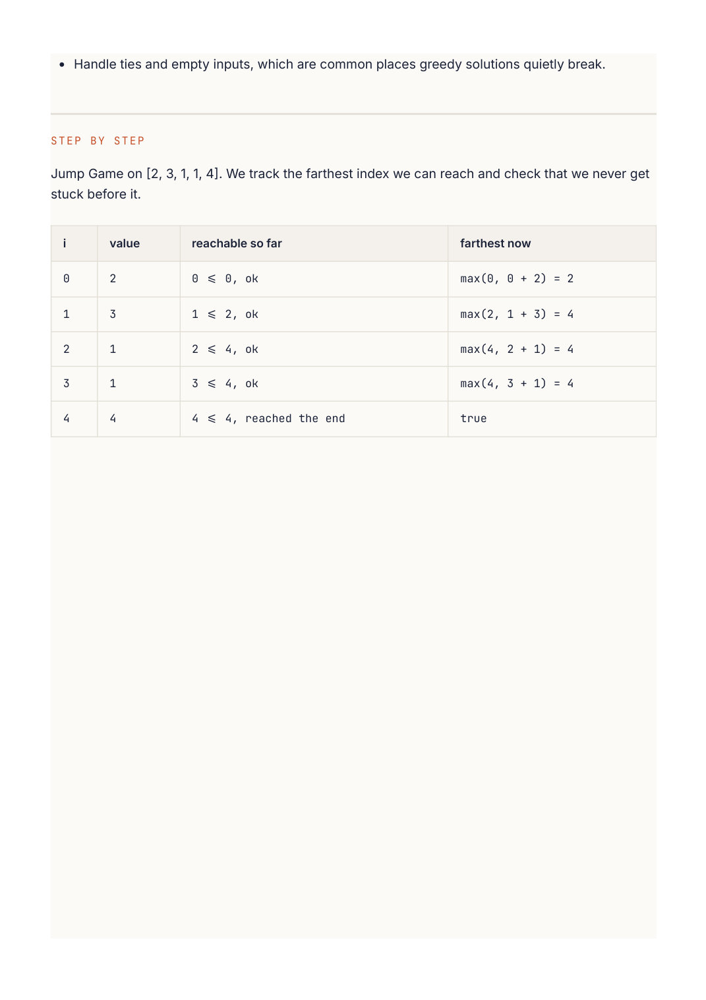

Competitive Programming
Chapter 14
Greedy
A greedy algorithm makes the choice that looks best right now and never reconsiders. When that works, it is wonderfully simple and fast. The catch is that grabbing the locally best option does not always lead to the globally best result, so the skill is knowing when greedy is safe.
Greedy versus dynamic programming
Both break a problem into steps. The difference: DP considers all options at each step and remembers them; greedy commits to one option and moves on. Greedy is correct only when a locally optimal choice provably leads to a globally optimal answer. If you are not sure it does, fall back to DP, which is safer but slower. On LeetCode, if a greedy idea passes your hand-checked examples and you can argue why the greedy choice never hurts, trust it. value = how far you can jump from here keep the farthest index you can reach; 2 3 1 1 4 if it ever reaches the end, you win Jump game: one pass, always tracking the farthest reachable point.
R E A C H F O R G R E E D Y W H E N Y O U S E E
"Maximum number of non-overlapping intervals", "minimum number of X to cover Y", "can you reach the end", "best time to buy and sell". Often a sort comes first (by end time, by size, by value), and then a single greedy pass does the rest.
Worked example: jump game
Each number tells you the maximum you can jump from that spot. Can you reach the last index?
Track the farthest index reachable so far. Walk forward; if you ever stand on a spot beyond your
farthest reach, you are stuck. Otherwise extend the reach. If the reach ever covers the last index, you made it.
def can_jump(nums):
farthest = 0
for i, jump in enumerate(nums):
if i > farthest:
return False # this spot is unreachable
farthest = max(farthest, i + jump)
if farthest >= len(nums) - 1:
return True # can already reach the end
return True
boolean canJump(int[] nums) {
int farthest = 0;
for (int i = 0; i < nums.length; i++) {
if (i > farthest) return false; // unreachable
farthest = Math.max(farthest, i + nums[i]);
if (farthest >= nums.length - 1) return true;
}
return true;
}
Worked example: best time to buy and sell stock
Given daily prices, find the best single buy-then-sell profit. The greedy insight: to sell on any given day for the most profit, you want to have bought at the lowest price seen up to that day. So track the minimum price so far, and at each day check the profit if you sold today. One pass, no DP table needed.
def max_profit(prices):
min_price = float('inf')
best = 0
for price in prices:
min_price = min(min_price, price) # cheapest day so far
best = max(best, price - min_price) # profit if we sell today
return best
int maxProfit(int[] prices) {
int minPrice = Integer.MAX_VALUE, best = 0;
for (int price : prices) {
minPrice = Math.min(minPrice, price); // cheapest so far
best = Math.max(best, price - minPrice); // sell today?
}
return best;
}
W A T C H O U T
Do not assume greedy works just because it feels right. Coin change is the famous trap: greedily taking the biggest coin fails for some coin systems, which is exactly why that problem needs DP. Before trusting a greedy solution, try to break it with a small counterexample. If you cannot, and you can explain why the greedy choice never blocks a better future, you are probably safe.
Deeper Intuition
Why a local choice can be globally best
Greedy commits to the best looking choice at each step and never revisits it. The hard part is proving the local choice is safe, usually with an exchange argument: show that any optimal solution can be rewritten to agree with the greedy choice without getting worse. Sorting by the right key is the setup move. For scheduling the most non-overlapping intervals, finishing earliest leaves the
most room for the rest, so sorting by end time and greedily keeping whatever fits is provably optimal. sort by end time, then keep each interval that starts after the last kept end keep skip skip (overlaps) keep keep time To pack the most non-overlapping intervals, sort by end time and greedily keep each one that fits.
Another worked example: Jump Game II
Reach the last index in the fewest jumps. Sweep left to right tracking the farthest index reachable.
Each time you arrive at the boundary of the current jump, you are forced to jump, so increment the count and extend the boundary to the farthest seen. That greedy sweep gives the minimum number of jumps.
def jump(nums):
jumps = 0
current_end = 0 # boundary reachable with the jumps so far
farthest = 0
for i in range(len(nums) - 1):
farthest = max(farthest, i + nums[i])
if i == current_end: # must jump now
jumps += 1
current_end = farthest
return jumps
int jump(int[] nums) {
int jumps = 0, currentEnd = 0, farthest = 0;
for (int i = 0; i < nums.length - 1; i++) {
farthest = Math.max(farthest, i + nums[i]);
if (i == currentEnd) { // time to jump
jumps++;
currentEnd = farthest;
}
}
return jumps;
}
GOING DEEPER
What kinds of problems this solves
U S E T H I S P A T T E R N F O R
Problems where taking the best looking choice at each step, usually after sorting by the right key, provably reaches the global best. Interval scheduling, reaching the end with jumps, and many buy or assign problems fit here.
Problem type Classic examples Interval scheduling Non-overlapping Intervals, Minimum Number of Arrows to Burst Balloons, Merge Intervals Reach and jumps Jump Game, Jump Game II, Gas Station Sequences and Best Time to Buy and Sell Stock II, Partition Labels, Assign assignment Cookies, Task Scheduler Building numbers or Largest Number, Remove K Digits, Candy strings
The algorithm, in a bit more detail
A greedy algorithm commits to a locally optimal choice and never looks back. The hard part is not the code, it is being sure the local choice is safe. The usual proof is an exchange argument: show that any optimal solution can be rewritten to agree with the greedy choice without getting worse, so the greedy choice is never a mistake.
Sorting is the setup move for most greedy problems. Sort intervals by their end time and you can always keep the one that finishes earliest, leaving the most room for the rest. Choosing the correct sort key is where these problems are won or lost.
Variations you will run into
Greedy often pairs with a sort, and sometimes with a heap when you need the current best to change as you go, as in task scheduling. When a plain greedy fails, the problem usually needs dynamic programming instead, because a choice now affects options later in a way you cannot see locally.
Edge cases and gotchas
Do not assume greedy works, confirm it with a proof or by testing small cases against brute force.
The sort key is the crux, sort by end time for selection and by start time for merging.
Greedy fails when a locally best choice blocks a better global outcome, that is your signal to switch to DP.

Handle ties and empty inputs, which are common places greedy solutions quietly break. Jump Game on [2, 3, 1, 1, 4]. We track the farthest index we can reach and check that we never get